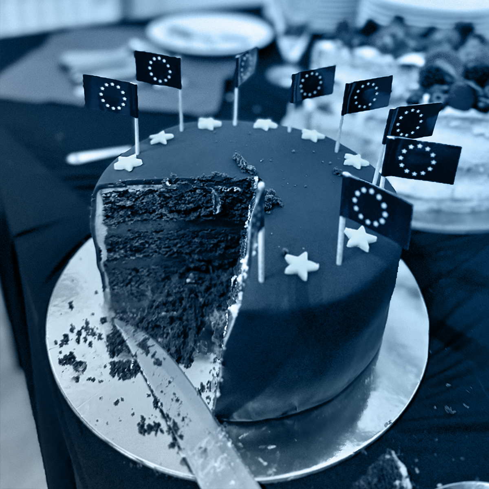
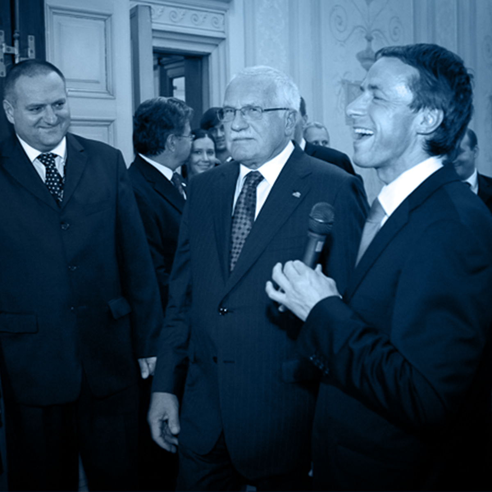
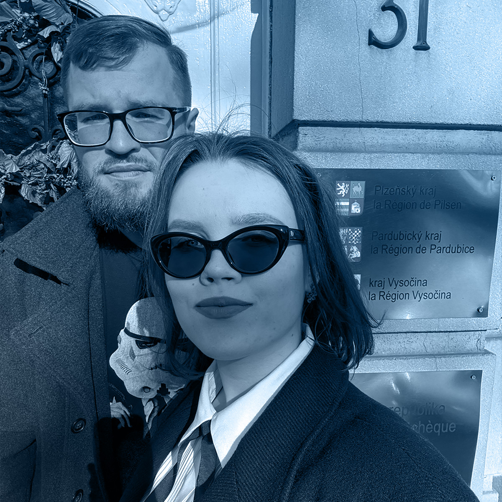

Budoucnost EU peněz
Koheze. Aneb politika soudržnosti a jak se budou rozdělovat evropské peníze. To bylo tématem akce, jíž se zúčastnil také ministr Petr Kulhánek.


Prosazujeme zájmy Plzeňského kraje v Evropské komisi, Evropském parlamentu a ve Výboru regionů. Sledujeme vývoj politik EU, které mají zásadní vliv na náš kraj. Zvyšujeme povědomí o našem kraji v Bruselu propojováním kultur i byznysu.



Koheze. Aneb politika soudržnosti a jak se budou rozdělovat evropské peníze. To bylo tématem akce, jíž se zúčastnil také ministr Petr Kulhánek.

V Bruselu působíme již od roku 2006. Za tu dlouhou dobu jsme u nás přivítali mnoho politiků, byznysmenů, ale i osobností z umění. Poznáte je?

Cílem exkurze bylo studentům přiblížit fungování Evropské unie. Jaké instituce studenti navštívili? S kým se potkali v Plzeňském domě?